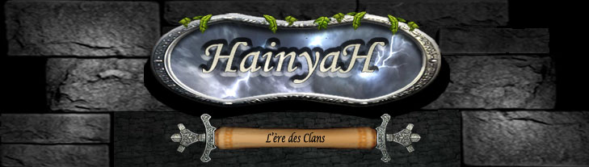
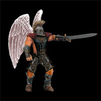
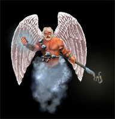

Archives HainyaH
HainyaH était un jeu de stratégie en ligne, gratuit et en français, créé au Québec en 2003 par Patrick Hains et Claude Hayfield. Chaque joueur dirigeait une seigneurie dans un monde médiéval et fantastique — bâtiments, armée, magie, voleurs — au sein d'un royaume d'une quinzaine de joueurs en guerre contre les autres. Le jeu a fermé ses portes vers 2016.
Ce qui suit a été retrouvé : sur de vieux disques, dans les captures de la Wayback Machine, et dans les souvenirs des joueurs.
Hai et Yah
Le nom du jeu est celui de ses deux créateurs, devenus les deux dieux de son histoire : « Hai, dieu guerrier ainsi que son frère Yah, dieu de la sagesse » (le premier livre de l'histoire d'Hainyah).


Les textes, les images et le jeu appartiennent à leurs auteurs, Patrick Hains et Claude Hayfield; ils sont reproduits ici avec leur permission, à des fins d'archive, et tous droits leur sont réservés. Les pages anciennes sont reproduites telles quelles, avec seulement ce qu'il faut pour qu'elles s'affichent aujourd'hui : l'encodage des accents, les liens brisés, et les images retrouvées ailleurs. Les liens vers des pages qui n'ont pas été conservées sont désactivés.